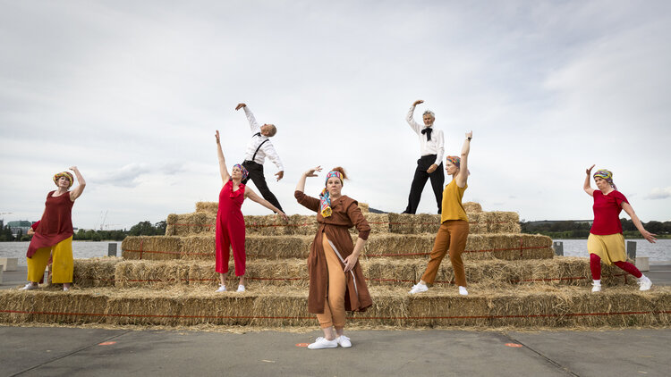
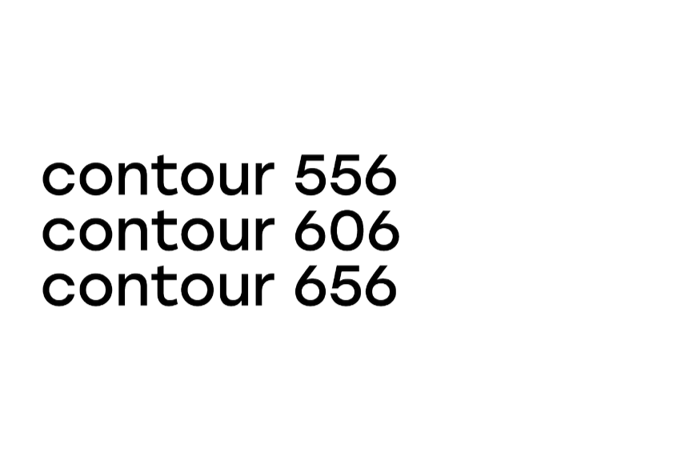

contour556 returns for The 4th edition this October -
bigger and better than before.
The 2022 edition sees the festival rebranded as Canberra Art Biennial, and sees expansion to the National Arboretum (contour 656), the University of Canberra (contour 606) as well as maintaining and building further on our presence in North and South Canberra, centred on contour 556, the height above sea level of Lake Burley Griffin.
Canberra Art Biennial extends across Canberra’s public spaces, and we are excited to partner with more private and public gallery / cultural spaces in inner north and south Canberra.
Neil Hobbs is the creative director for the contour 556 and contour 656 areas, with support from Heeseon Jung and the contour 556 board. The contour 606 satellite event will be co-curated by University of Canberra staff members Associate Professor Julian Raxworthy, discipline lead of the landscape architecture program and Ben Ennis-Butler, senior lecturer and Program Core Coordinator, Design.
University of Canberra joins us as a major sponsor and supporter - The Faculty of Arts and Design students have revisited our logo and graphic branding, and we are delighted to have Julian and Ben contribute to the event.
Artists will be responding to the designed city of Canberra: represented by Australia’s political, cultural and physical history. The event engages people of all ages and abilities, delighting, puzzling and encouraging interaction with art and public space.
find us here!
artists from 2020

Fiona Hooton
Straw Ziggurat
ABOUT THE WORK The ziggurat references, the Capitol building planned by American architects, Marion Mahony Griffin and Walter Burley Griffin in 1911. The Capitol was to be sited on the city’s highest hill, Kurrajong [where Parliament House is today].
Lewer Richard
I can’t run away all my life sometimes I just have to stand and fight
ABOUT THE WORK It’s a readymade canvas both epic and contained. An Australian flag, clearly a little worse for wear. It’s huge - large enough to have once flown above Parliament House in Canberra, the very epicentre of the political nation. This gives it its own public life, a singular object’s history that is also wrapped up in the history of our federated, young nation. Expansive in scale, this object also provides a conceptual boundary, a historical and political framing that lends symbolic weight to Richard Lewer’s intervention.
.
our ongoing project: city commisions


contour 556 congratulates the selected artists for the Creative Recovery and Resilience Program in association with artsACT.
Alison Alder
Alison will work with Hands On Studio artsts. the project will raise awareness about the effects of social isolation and extra difficulties.
The project will create 3 text based prints and banners 8 x 2m with live spoken performances by eight artists.
Michael Sollis
Michael will weave together interviews from immunocompromised families with music inspired by the increasing isolation of the stars.
Working with Capital Region Cancer Relief. Michael will produce an object that will play interviews and sound.
Sammy Hawker
Sammy will work with participants from Headspace Canberra. She will take portraits, then the subjects will manipulate the negative to add elements of their lockdown lives.
The portraits will be displayed at multiple venues around Canberra.